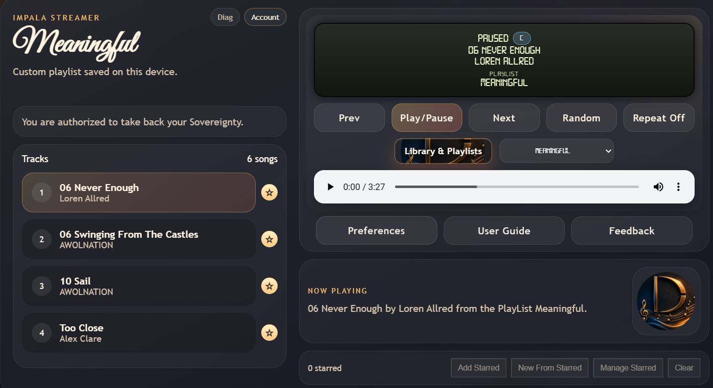

Impala Streamer
A sovereign audio/video player built for people who want speed, stability, and control—without accounts, tracking, or algorithmic noise. Designed for everyday listening: walking, working, or streaming at home.

Built For Real Use
- Instant load, no dependencies
- Predictable behavior, no “smart” features
- Local media support with optional JSON libraries
- Custom playlists and personalization
- Diagnostics for multi‑day uptime and stability
Sovereign by Design
- No accounts. No analytics. No ads. No subscriptions.
- Works the same every time — no tracking, no profiling, no surprises.
- Once purchased, it is owned permanently. No recurring fees.
Current Status
Entered pilot testing on June 23, 2026.